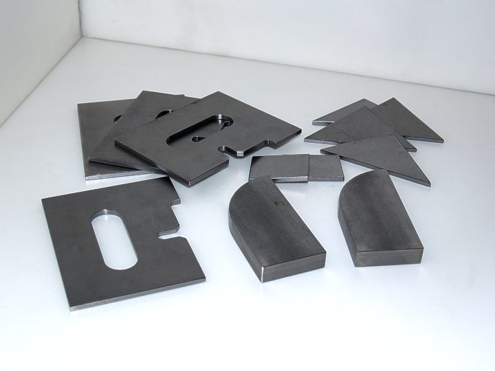

-
You don't even need the soft poly bushings, all they do is create some sort of binding effect. The monoballs can take the full load if you bought the correct spec'd ones. You just have to find some way to mount and center the monoball(machine a groove for a cir-clip for example) and just run hi-misalignment spacers. I do have another camber idea but I'm not sure if it'll be better than yours. I'll post it up when I have the thought fully formulated. -
The poly bushings are used as grease retainers and sound deadening. They will be of such soft materialmod_mastaz wrote: You don't even need the soft poly bushings, all they do is create some sort of binding effect. The monoballs can take the full load if you bought the correct spec'd ones. You just have to find some way to mount and center the monoball(machine a groove for a cir-clip for example) and just run hi-misalignment spacers. I do have another camber idea but I'm not sure if it'll be better than yours. I'll post it up when I have the thought fully formulated.
that there won't be a binding issue.
The machined groove for a cir-clip is a better idea than the screws for retaining the ring baring with in the
swing arm journal. The swing arm journal is lined with a sleeve so any extensive machining in that area could
be problematic.
The inside diameter of the unlined journal is 1.450"
The inside diameter of the journal sleeve is 1.300"
The outside diameter of the baring housing is 1.340"
The outside diameter of the cir-clip is 1.406"
-
Work is progressing. The machine shop says he'll have all my parts done this week. (???? we'll see)
The adjuster is similar to the one made by Datsport seen below. I made a cardboard model
to test fit. I'm sure once I get to welding there will be some modifications that will have to be made.
This is an expensive modification due to having the machining done locally. The adjustable bolts
cost $105 each and the set of bushing sleeves cost $340.00
My guess is, if I had a machinists lathe I could sell the part for half that amount.
[img]br /br / [/img]
[/img]
-
OK I've been thinking and I don't know how I would be able to slot the outer mounts correctly so that it would not throw the toe adjustment off. How did you do it? Or are you going to provide specs on how to slot it too? I'd probably have a machine shop do it since they have more precise tools than my ruler and hand drill haha. The rest of this stuff seems simple enough for me to have it done in my garage. I'm counting the days until this is finished haha. Sorry for bothering so much heh. -
scribe 2 paralell lines that are perpendicular to the top of the crossmember. Drill a small hole and do the rest by hand.mod_mastaz wrote: OK I've been thinking and I don't know how I would be able to slot the outer mounts correctly so that it would not throw the toe adjustment off. How did you do it? Or are you going to provide specs on how to slot it too? I'd probably have a machine shop do it since they have more precise tools than my ruler and hand drill haha. The rest of this stuff seems simple enough for me to have it done in my garage. I'm counting the days until this is finished haha. Sorry for bothering so much heh. -
Good question. For me the slots won't be hard to make. I will supply a template that you can use to make your own.mod_mastaz wrote: OK I've been thinking and I don't know how I would be able to slot the outer mounts correctly so that it would not throw the toe adjustment off. How did you do it? Or are you going to provide specs on how to slot it too? I'd probably have a machine shop do it since they have more precise tools than my ruler and hand drill haha. … Sorry for bothering so much heh.
As in my first attempt, I will drill the holes using my drillpress and cut the slots wiyh my tabled mounted jig saw.
I use Coreldraw for all my mechanical 1:1 scale drawings. I print the drawing on 8.5" x 11" self adhesive label paper.
I cut out the drawing, remove the backing and apply the drawing (pattern) to the surface that is to be drilled and/or
cut. The pattern can be easily removed with mineral spirits.
The hard part is finding a simple way to get a right angle on the rear subframe. My first attempt was not as precise
as I would have wanted it and there might have been a slight toe error.
However, when I find the answer, I will post it here.
Other news:
I have had to give up on the machinist I asked to make the parts. The guy has turned out to be a total flake. This Friday
I will be picking up what ever parts he has done. He says he will have the spherical bearing retaining sleeves done but not
the spherical bearing adjustment pins. I am try to find a local shop to do those for me. If I can't, I'll post here and on z31.com
a request for a machinist to make them.
Today, I am spraying Herculiner (undercoating) on the underside of the car to complete the frame rebuild I did a couple
years ago. Over the Herculiner, I will apply a light coat of a 2 part epoxy that will match the OEM metallic dove color that
was originally on the car. Over the epoxy will be applied a clear acrylic urethane. Once this has been done, I can start
reassembling the under body parts: suspension, brake/fuel lines, gas tank … etc. -
OK. I have a new machine shop that will do the work and for less. I will have the parts in two weeks.
I am also asking them to make this part for me.
-
Picked up these parts today.
-
OMG! They look so nice. I'm so anxious to see the final result. I have other ideas on the monoball bushing but your setup still looks very good. I'll post up a picture of what kind of bushing I'm talking about when I find it. It's pretty much a one unit bushing with the monoball inside and a circlip holding it to make the monoball removable from the actual bushing itself. It's really nice, but I just don't know how much it'll cost to make.
Edit:
I found a pic. This is for an RX-7. It's made by mmr-direct(ugh!) Good products, REALLY bad service. I'll spare the details.
http://www.mmr-direct.com/Pictures/RX7/ … SB4001.jpg -
More parts today.
 -
z -
Interesting idea. I agree with you about getting the outer slot perfectly aligned. However, it is much easier to square thezmech wrote: Question: Why not look at doing the same thing on the inside mount vice the outside mount? The outside one changes the ride height and that is the part I did not like. The inside one would only tilt the wheel using the outside one as a pivot. Also, slotting the outside mount is not as easy as people say. If you get it off just a bit you may not have enough adjustment in the toe. Trust me, I know.
If per se one would use the heim joint welded to the inner end of the arm. This would allow for toe adjustment. Then slot the inside or make plates to move it up so the wheel will tilt out a bit.
machined camber plate, as seen above, by first bolting and welding them in place before cutting the slot.
I have been busy filling a poly order for Jason but by Tuesday I should be able to make most of the changes and do the
welding to both the subframe and the C arms. Pictures will be posted. -
Hey Gary have you gotten to test this out or finish up the subframe yet? My friend and I are going to be picking up a spare subframe and get quotes for machining work soon. I'm going to try to get press-fit monoball bushings created so I don't have to machine those sleeves and I might need your help since you have the specs. I just want to get some rear suspension work started on already heh. Anyway, I hope to see some updates soon. -
Yes. This week end. I have yet to finish up the bearing retainer installation on the
C arms. Just a mater of drilling some holes and tapping for the the set screws and grease
fitting. (last image). Oh, yeah and make the soft poly grease boots.
When I have everything completed and painted, I will do a full "How To" write up.
-
This is the first coat of epoxy primer. The parts have been sanded and are hanging
waiting for the second coat of primer.

{kind=link}
Copyright © 2006–. All rights reserved. Privacy Policy